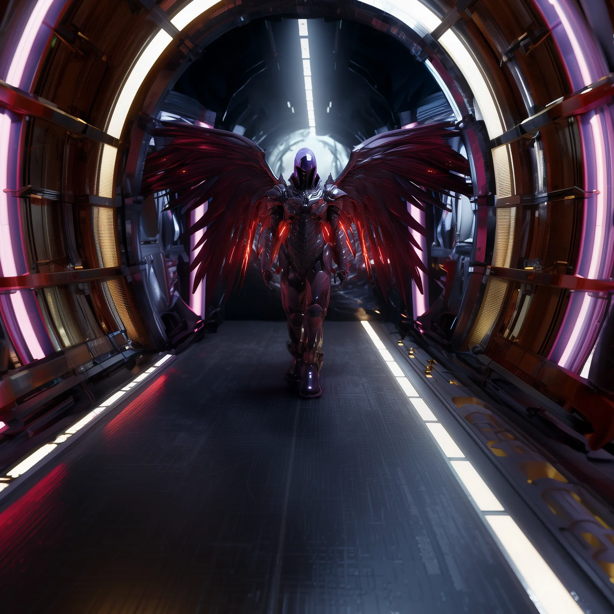

©
©
GENEZYS ARCHIVE · Earth 1 · Legionnaire
Fenek
Belly Tagger

Archive record
Fenek is the least patient Legion of the Vanguard, and the least apologetic about it. Where others cut with precision, the Belly Tagger rakes the entire line with fire and sorts out the details afterward. The Vanguard says light goes first. Fenek just makes sure it arrives loudly.
Combat signature
Flame Thrower
90 Cosmara
350 Animus
340 Vitalis
Rakes the line with a wide strike: Deals 50 pierce damage to all enemies and reduces 50 cosmara to all enemies.
Genezys 01:07 ™&©2026LEGIONS
Return to LEGIONS